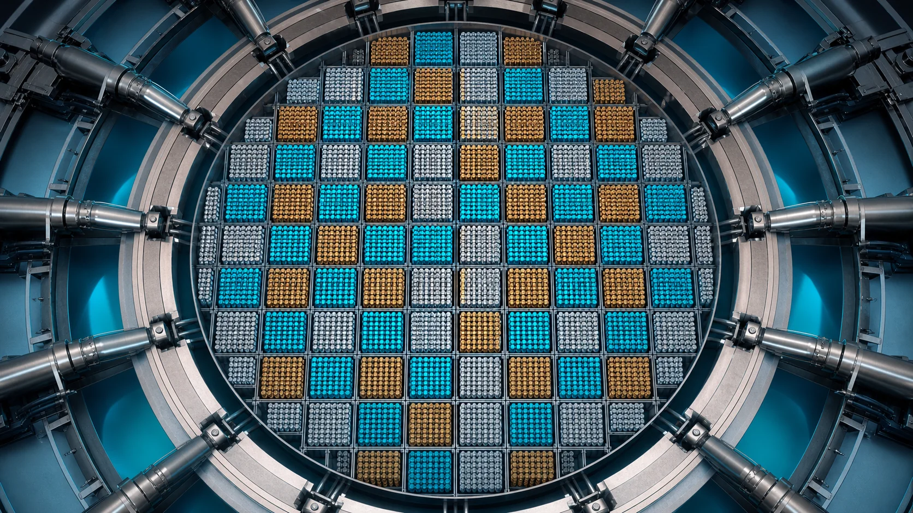
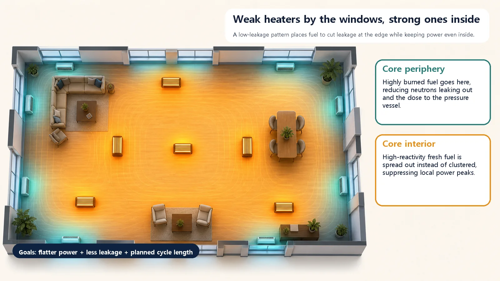
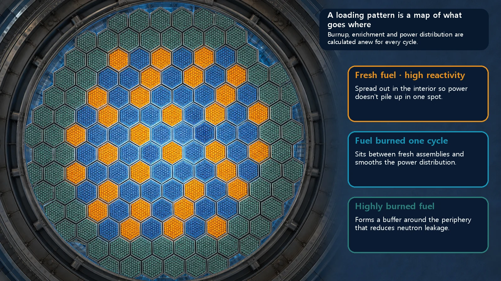

Long-Term Core Behavior & Fuel Cycle · 163
By the Window or in the Middle of the Room? — The Fuel Loading Pattern Puzzle a Reactor Solves Every Refueling
At every refueling, designers decide where fresh and burned fuel sit in the core, and that seating chart shapes power, leakage and safety margin.

A loading pattern is the map of which fuel, fresh or burned, sits in which position of the core after refueling. It aims to flatten power, reduce neutron leakage at the edge and secure the planned cycle length. Today's patterns are mostly low-leakage compromises: burned fuel at the edge, fresh fuel scattered inside, with burnable poisons.
Imagine heating a room in winter. You have several heaters: some blaze hot, others are old and only lukewarm. Now, where in the room do you put them? It might seem like anywhere will do, but this one choice decides whether the room warms evenly or one corner roasts while the rest stays chilly. And if you push a powerful heater right up against the window, the room may warm up, but heat pours out through the glass.
Remarkably, the people who design reactor cores face exactly the same puzzle every time fuel is reloaded: "Where in the core should this fuel go?" The map that answers that question is today's topic, the loading pattern (also called the reload or refueling pattern).
Same fuel, but the seat matters
A reactor doesn't replace all its fuel at once. Each time, only the most heavily burned part is taken out; the rest stays in, and an equal amount of fresh fuel is added. So the core holds a mix of brand-new fuel, fuel burned once and fuel burned several times, from full-strength newcomers to tired veterans, all sharing one core.
That raises the decisive question: in which positions across the core should these very different fuels sit? Should fresh fuel go around the outer edge, or inside? Should the strong ones be grouped together or scattered? The core map that records this "what goes where" decision is the loading pattern. In a word, it is a seating chart for fuel.
And it is never a random shuffle. Every cycle, core designers calculate the neutron behavior and power at each position and seat the right fuel in the right spot: a thoroughly calculated seating chart.
Three goals at once
Designers chase three main goals. Back to the heated room.
First, the room should warm evenly. Bunch the heaters in one place and it's scorching in front of them and cold on the far side. The core is the same. If power concentrates in certain positions, the temperature of the fuel there, and of the cladding around it, rises locally, and the safety margin ("this much is still fine") shrinks accordingly. So the first goal is to flatten the power distribution.
Second, don't waste heat out the window. Put a strong heater against the window and much of its heat escapes through the glass. In a core, what escapes "out the window" isn't heat but neutrons. Neutrons that slip out past the edge of the core can no longer cause fission; they are simply wasted. On top of that, when these fast neutrons keep striking the thick steel pressure vessel surrounding the core, over many years they gradually make the metal harder and more brittle (embrittlement). So the second goal is to reduce neutrons leaking from the edge, which both saves fuel and keeps the plant healthy for a long time.
Third, one load of fuel should last the planned period. The arrangement also affects how long the whole core can keep operating critical (the cycle length). Power has to be budgeted carefully to reach the next refueling without strain.
So does fresh fuel go by the window or inside?
There are two broad strategies.
One is to place powerful fresh fuel around the core's outer edge. A core is naturally strong in the middle and weak at the edge, so putting strong fresh fuel at the weak edge raises the power there and flattens power overall, like putting a blazing heater by the chilly window to even out the room's temperature. But there's a catch: with strong fuel right at the edge, lots of neutrons leak out, and the neutron load on the pressure vessel rises too.
That led to the second strategy, the low-leakage pattern, which, as the name says, cuts leakage. It flips the idea: put highly burned, weaker fuel around the outer edge and the powerful fresh fuel inside. Lukewarm heaters go by the windows; the blazing ones move into the room. With weaker fuel at the edge, far fewer neutrons leak out, fuel is used more economically, and the pressure vessel takes less of a beating. But this creates a new problem: crowd the strong fresh fuel inside and the center can get too hot, like cutting heat loss at the windows only to make the middle of the room sweltering.
How is that solved? The answer is to scatter rather than cluster. Instead of bunching the strong fresh fuel in one spot inside, designers spread it evenly among the burned fuel, like pieces on a chessboard. On top of that, burnable poisons (neutron-absorbing materials that gradually use themselves up) are included in the fresh fuel to soften its strong early punch. That way you get lower leakage and flat power together. Today's loading patterns are largely the product of this compromise.

Neighboring terms that are easy to mix up
First, moving fuel and the map are different things. During refueling, assemblies are physically moved from one position to another, but that moving operation itself should be kept separate from the finished core map that results. The loading pattern is the seating chart drawn as the result. Exactly which assembly moves from where to where, and in what order, is a story of its own for another time.
Second, "how much and when to replace" and "where to place" are different questions. What fraction of the core is replaced each cycle and how much fresh fuel to use concern the amount and timing of replacement. The loading pattern refers only to what is seated where in space when that replacement happens.
Finally, power flattening is not the loading pattern. Flattening is one of several goals a good arrangement aims for; the loading pattern is the means of achieving it, the arrangement itself.
How do you know it's a good arrangement? The peaking factor
There's one very intuitive number for how even an arrangement is. Without complicated math, it can be written like this:
Power peaking factor = highest local power in the core ÷ average power of the core
It literally says "how many times stronger than average is the hottest spot?" The closer this value is to 1, the more evenly power is spread through the core; the larger it is, the more one spot is unusually hot. A well-designed loading pattern keeps the peaking factor low, close to 1, so no fuel overheats on its own and a generous safety margin remains.

Today's takeaways
- A loading pattern is a map of which fuel (fresh or burned) goes in which position in the core at refueling. It is about "where to place," not "when or how much to replace."
- A good arrangement aims at three goals: flattening power so it doesn't pile up on one side, reducing neutron leakage at the edge to save fuel and protect the vessel, and securing the planned cycle length.
- Fresh fuel at the edge flattens power but leaks a lot; fresh fuel inside cuts leakage but tends to overheat the center. So today the main approach is a low-leakage compromise: burned fuel at the edge, fresh fuel scattered inside, with burnable poisons added.
- How even an arrangement is can be judged with the power peaking factor (highest power ÷ average power); the closer to 1, the better.
- A loading pattern is not a random mix but an intended seating chart worked out by precise calculation every cycle, and a key to understanding how nuclear plants use fuel economically while protecting their safety margins.
Just as heater placement decides how warm a winter room gets, where fuel is seated decides a reactor's safety margin and economics. How fuel is actually moved from position to position, the shuffling story, comes next.